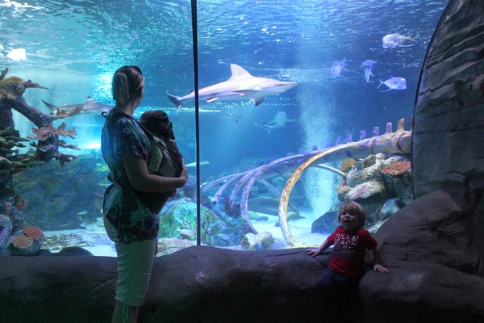

The Water World
Welcome to Water World, the main open aquarium in Sri Lanka! Situated on a grand 5 section of land property on the banks of the Kelani River, Water World is an oceanic wonderland which is home to a various gathering of more than 1000 assortments of fish and spineless creatures. Our unparalleled scope of amphibian life incorporates crisp water, marine and bitter water fauna and verdure, from eco frameworks around the world. At Water World, you will observer uncommon and intriguing species, for example, Arapaima (The biggest crisp water angle on the planet), Lung angle. Electric eel and Fresh water sting beams from the Amazon River.
Water World is truly unique as it is the only local facility that offers the thrilling experience of observing majestic sharks and graceful eagle rays in action

Water World involves great attractions, for example, more than 250 presentation tanks and lakes with an all out water limit of more than one million liters, a walk way worked to resemble a surrender crossing of more than 800 feet, a Shark Dome with 110,000 liters of ocean water, and more than 10,000 living amphibian life forms. Most recent fascination at Water World is the Underwater Tunnel Aquarium. It was uncovered in year 2014 and It is the first of its sort in South Asia.
Different attractions of Water World incorporate, live plunging shows with the sharks (Only when appropriate jumping conditions exist) riding vessels at watercraft yard, hand nourishing of fish and getting a hands on understanding of marine animals at the " Touch Pool".
A visit to Water World is probably going to demonstrate considerably more than the ideal, sensational family excursion. It is destined to be both a noteworthy instructive affair and just as an enchanting experience with the miracles of the amphibian world.